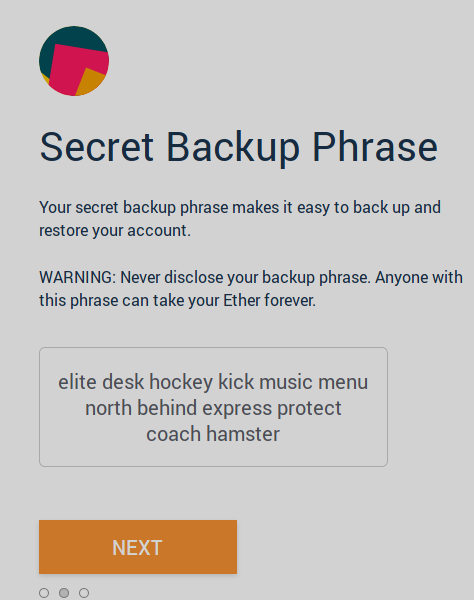

Gonzalo Sánchez


So you just created a new wallet using metamask, ledger-live or other similar software and at some point you got asked to securely store a 12 word sentence like the one below (Don’t worry, I won’t use that mnemonic 😉).

In this example the mnemonic is elite desk hockey kick music menu north behind express protect coach hamster but have you ever wondered how these sentences are generated?
What is a mnemonic?
First of all a mnemonic is a group of words chosen randomly from a list of 2048 unique words. The number of words in a mnemonic can be 12, 15, 18, 21 or 24 but most of the times 12 words are used. There are lists of words for different languages, for example english and spanish. A list of different lists of words can be found here.
How are the words chosen?
To generate the mnemonic we need to get entropy from a good source of randomness. This entropy must have 128, 160, 192, 224 or 256 bits. Then we need to calculate the sha256 hash of this entropy and store the first N bits as a checksum. The length N of bits of the checksum will depend on the length of the entropy as we can see in the table below.
| Entropy bits | N Checksum bits |
|---|---|
| 128 | 4 |
| 160 | 5 |
| 192 | 6 |
| 224 | 7 |
| 256 | 8 |
Now that we have the checksum bits we can concatenate them to the entropy to generate an entropy'. Notice that the length of entropy' can be divided by 11. This is not random at all. If for example you have an entropy of 128 bits you can generate an entropy' of 132 bits and if you divide 132 by 11 you will get 12. This means that you have 12 groups of 11 bits on entropy'. Each one of these 11 bits group will work as an index to search words in the word list generating a 12 word mnemonic in this case. The number of words in the mnemonic will depend on the length of the entropy' as we can see below.
| Entropy bits | Entropy’ bits | Words |
|---|---|---|
| 128 | 132 | 12 |
| 160 | 165 | 15 |
| 192 | 198 | 18 |
| 224 | 231 | 21 |
| 256 | 264 | 24 |
Example
Let’s do an example step by step.
First of all we are going to generate a random 128 bits number
0001 0010 1111 0100 0110 0001 0100 0111
0100 1110 0101 0100 0100 1110 1000 0110
1110 0111 0010 0001 0001 1110 1000 0110
0110 0111 1011 0010 0101 0110 1001 0010
Then we are going to generate the sha256 hash of the entropy
0110 0000 0100 0010 1000 1110 1000 1011
1110 1110 0101 1000 0101 1101 1001 1110
0000 0000 0000 1010 0100 0111 0001 0101
1000 0000 0001 0111 1100 1111 1000 0011
1010 0011 0001 0001 1100 1010 0111 0011
1111 0001 0101 1001 1011 1000 0111 0101
0000 1111 0001 1110 1111 1110 0010 0101
0010 1000 0111 1111 0101 0000 0010 0101
Then we can get the checksum (first 4 bits)
0110
And generate entropy' by concatenating the checksum to the entropy and create groups of 11 bits
00010010111
10100011000
01010001110
10011100101
01000100111
01000011011
10011100100
00100011110
10000110011
00111101100
10010101101
00100100110
Each one of these groups of 11 bits can be transformed to decimals
151
1304
654
1253
551
539
1252
286
1075
492
1197
294
And then search for each word in the word list using each number as an index. If we use the english word list
base
perfect
fade
original
eager
drop
orient
cat
major
diesel
noble
cave
So in our example the mnemonic is base perfect fade original eager drop orient cat major diesel noble cave.
The checksum at work
Lets see how the checksum can help us to detect invalid mnemonics. Imagine we want to recover our metamask wallet and we mistakenly write the mnemonic abandon perfect fade original eager drop orient cat major diesel noble cave. Notice that we have changed the word base for abandon. Now we can do the inverse process.
First we get the indexed of each word
0
1304
654
1253
551
539
1252
286
1075
492
1197
294
Then we get the 11 bit representation of each index
00000000000
10100011000
01010001110
10011100101
01000100111
01000011011
10011100100
00100011110
10000110011
00111101100
10010101101
00100100110
We know that the last 4 bits of this is the checksum
0110
We remove this to get the entropy
0000 0000 0001 0100 0110 0001 0100 0111
0100 1110 0101 0100 0100 1110 1000 0110
1110 0111 0010 0001 0001 1110 1000 0110
0110 0111 1011 0010 0101 0110 1001 0010
Then we calculate the sha256 hash of this entropy
0101 1111 0011 0000 1111 1101 0111 1011
0100 1001 1000 0001 0101 0001 0011 0000
1010 0011 0100 1110 0111 1001 1100 1000
0001 0010 1101 0100 0010 0110 0000 0011
1011 0110 1001 1011 0100 1111 1111 0011
0001 0110 0000 0101 0011 0000 0111 1000
0111 0000 1010 1101 1000 0101 1100 0111
0001 1010 1010 0000 0011 0001 0000 0000
And we get the actual checksum for this entropy
0101
We can see that the checksum included on the mnemonic is different from the checksum generated from the entropy
0110 != 0101
So we can conclude that the mnemonic has an error.
Final words
This write up was created because I wanted to understand how mnemonic sentences are generated so hopefully it will help you to understand it too 😄.